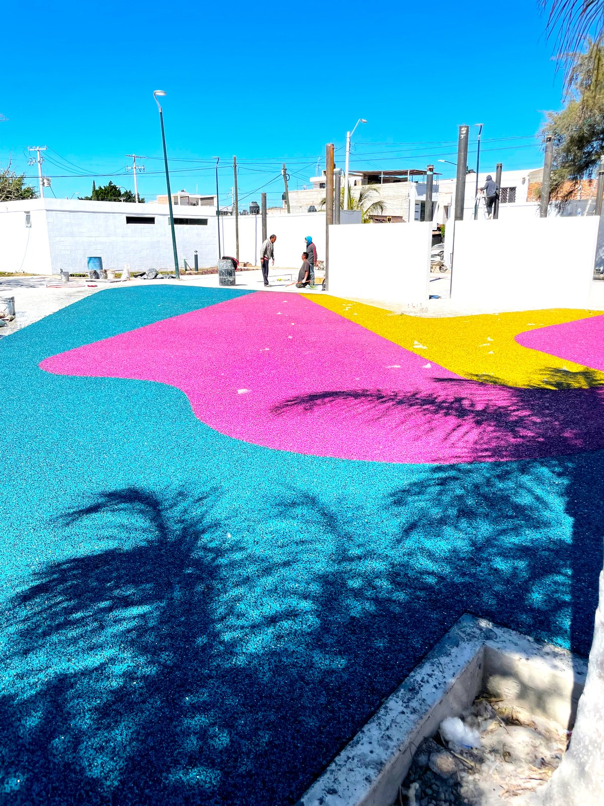
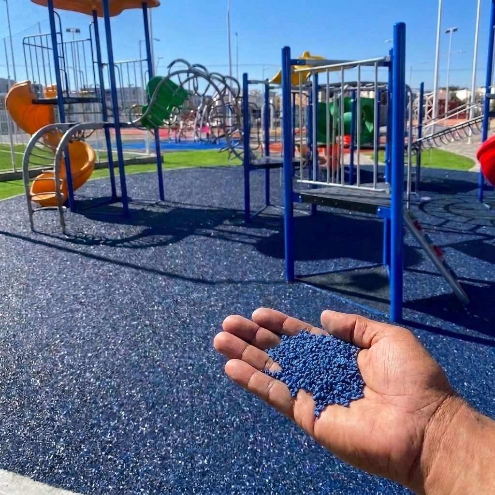
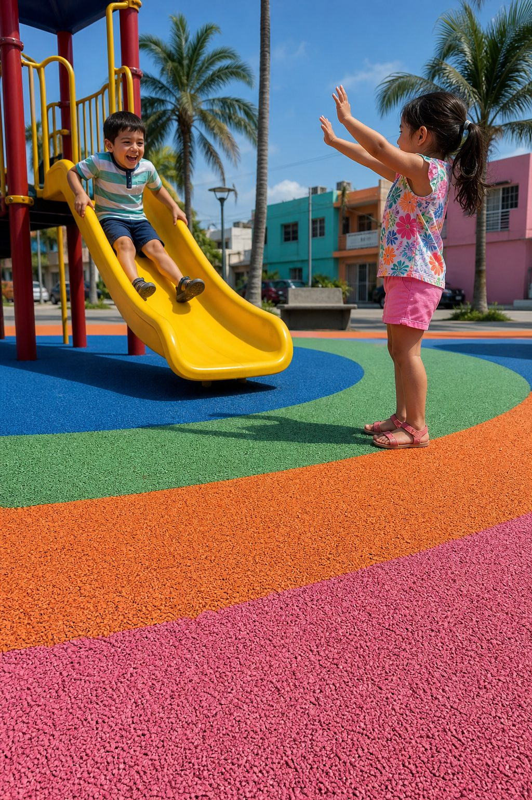
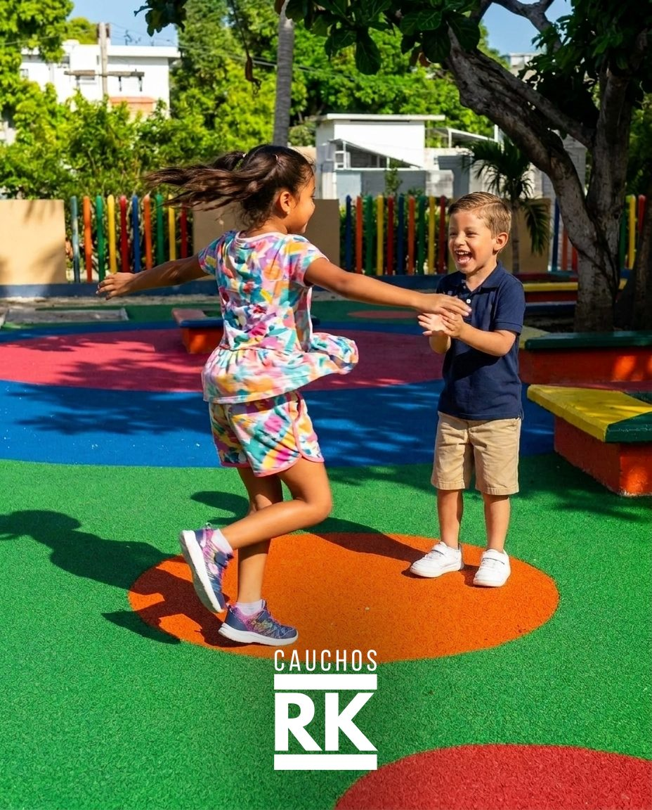
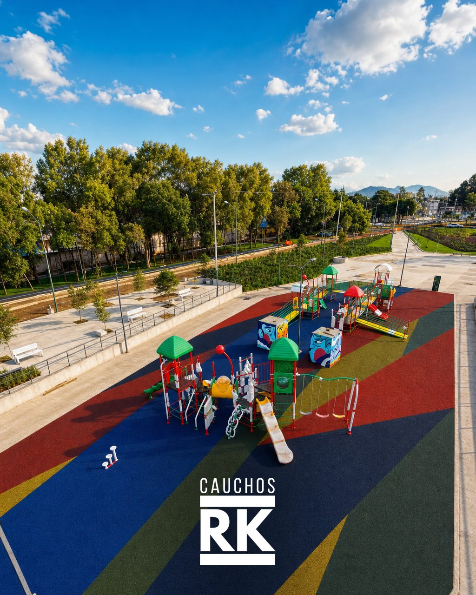
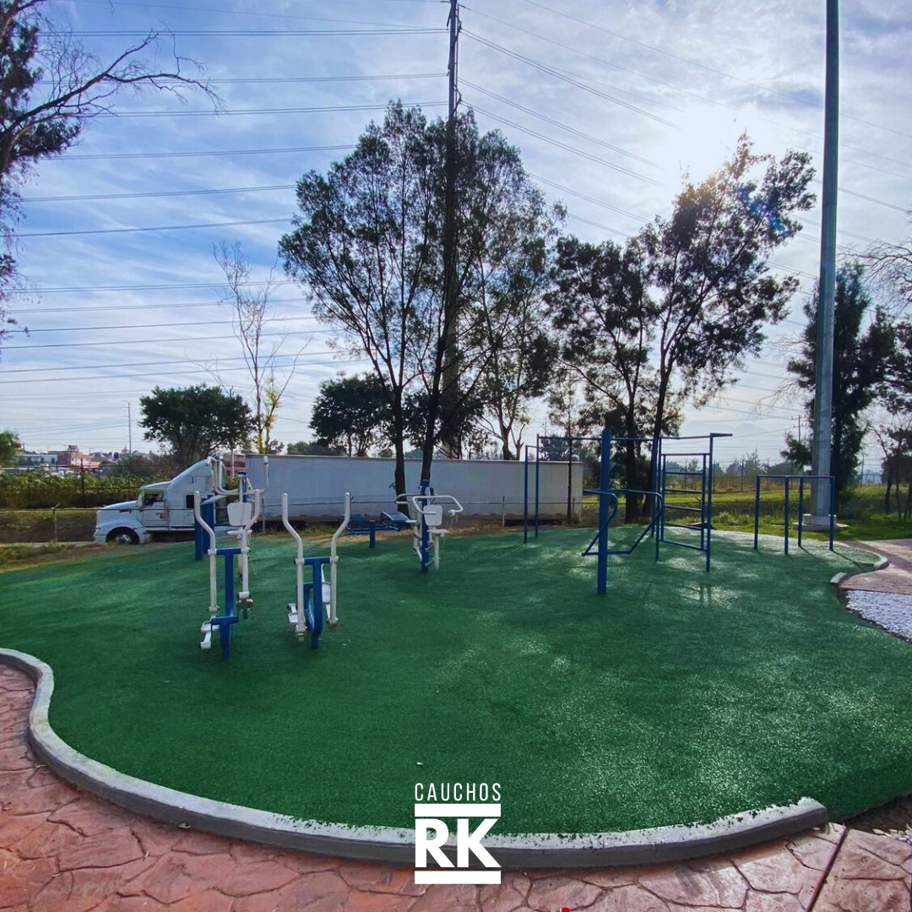
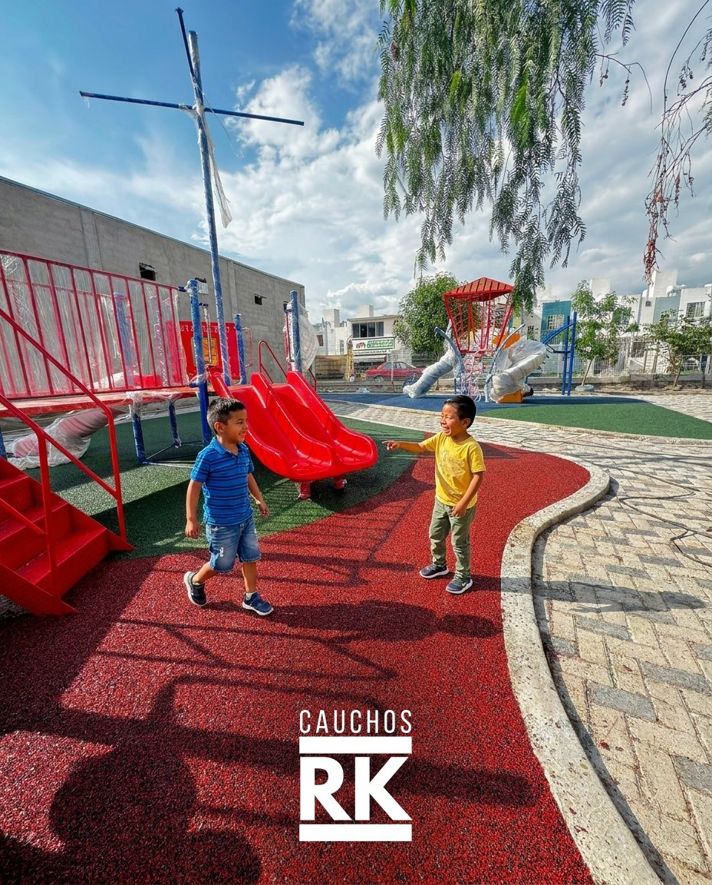

En un patio escolar, los niños se van a caer. Que el golpe termine en un raspón y no en la enfermería depende del piso. Fabricamos e instalamos piso de caucho amortiguante, calculado para la altura de sus juegos.
Cotiza por WhatsApp
No vendemos por metro suelto: armamos el patio completo. Tres formas de resolverlo, según el presupuesto y las ganas de sorprender a los papás.



El patio pintado se ve increíble en la foto del primer día de clases… y descolorido para la clausura. Cientos de zapatos, guardias y sol lo despintan en un solo ciclo. Nuestro caucho no se pinta: nace del color, así que el patio de la foto de agosto se ve igual en la de junio.
Si con los años una zona de mucho tránsito se desgasta, se renueva por partes igualando el tono — no hay que rehacer el patio entero ni pedir presupuesto de nuevo.
Sabemos que la decisión rara vez es de una sola persona: hay que convencer a la dirección, a los papás o al cabildo. Le damos los argumentos claros para que el patio se apruebe:



Se instala sobre un firme de cemento o asfalto. Si su patio todavía es de tierra o pasto, lo asesoramos sobre la base que necesita antes de instalar.
Nosotros fabricamos e instalamos. Vamos con nuestro equipo a colar el piso en sitio, en toda la República.
El espesor del piso se calcula según la altura de caída de cada juego: mientras más alto el juego, más amortiguación lleva la zona debajo de él.
Se limpia con agua a presión y queda como nuevo. Es un piso que se renueva y se parcha por zonas; no se levanta ni se tira como una loseta.
Instalar fuera de Morelos es lo normal para nosotros, no un extra. El traslado del equipo y el material va incluido y desglosado en la cotización, sin sorpresas después. Díganos dónde está su escuela y lo calculamos exacto.
Lo asesoramos sin compromiso: medidas, colores y la amortiguación que sus juegos necesitan. Le cotizamos sin costo el mismo día.
WhatsApp 777 572 53 00